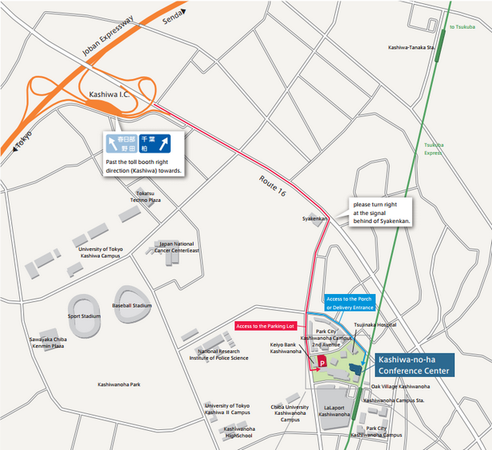

ДЕЯТЕЛЬНОСТЬ
Японско-Российский Дальневосточный сельскохозяйственный бизнес-форум 2020.
～Потенциал к расширения бизнеса меда～
Дата проведения
Пятница, 28 февраля, 2020 13:00 ~ 16:50
Организатор
Национальная университетская корпорация Университет Тиба
Место проведения
Kashiwanoha Conference Center
Hotel & Residence Building 2F, Kashiwa-no-ha Campus
178-4 Wakashiba, Kashiwa, Chiba 277-0871
Стоимость участия
Бесплатно (требуется предварительная регистрация)
Языки
Синхронный перевод (русский / японский)
Содержание
Этот форум предназначен для обмена информацией о проблемах и решениях по расширению импорта меда с Дальнего Востока России.
Ожидается участие четырех университетов, представленных ниже, а также органов местного самоуправления и компаний с Дальнего Востока России и Сибирского региона.
- ・ Приморская государственная сельскохозяйственная академия (Уссурийск, Приморский край)
- ・ Сахалинский государственный университет (Южно-Сахалинск, Сахалин)
- ・ Дальневосточный государственный аграрный университет (Благовещенск, Амурская область)
- ・ Новосибирский государственный аграрный университет (Новосибирск, Новосибирск)
Программа
・Вступительное слово вице-президента Университета Тиба
・Планируются следующие презентации:
- - Проблемы расширения импорта меда с российского Дальнего Востока
- - Характеристика пчеловодства и производства меда в каждом регионе и текущая экспортная ситуация
・Панельная дискуссия
・ Встреча по обмену информацией после форума (Стоимость участия: 3000 иен)
Заявка на участие
Пожалуйста, нажмите «Онлайн регистрация», чтобы ввести следующую информацию:
- ① Имя
- ② E-mail
- ③ Наименование организации, подразделение и адрес
- ④ Желание принять участие во встрече по обмену информацией.
Контакты
E-mail: fc-farm@chiba-u.jp
Tel.: +81-4－7137―8103
Web: http://www.fc.chiba-u.jp/farm/jp/

Page QR-code
Как добраться
На поезде: Линия Tsukuba Express, 2 минуты от станции Kashiwanoha Campus

На машине: 10 минут от Joban Expressway Interchange (парковка платная)
Карта